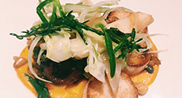

新着レシピ


今だからこそ見直したい和食

普段私たちが何気なく口にしている和食ですが、その基本は一汁三菜。ご飯、味噌汁、お漬物の他 主菜（肉または魚）、副菜として季節毎の野菜と豆類で構成されます。
昔から「旬の野菜を食べましょう」と言いますが、それは素材がじっくりと時間をかけて 蓄積してきた旨みや栄養価が最高になったところでいただいて、効率よく栄養を取り 風邪などの予防をしましょうね、ということです。
それでは、各季節ごとの旬な野菜について調べてみましょう。
続きを読む簡単！おすすめレシピ
季節の食材～春～
新玉ねぎに春キャベツ、新じゃが、山菜などなど・・・ 春の野菜は風味が良くみずみずしいのが特徴です。
それでは、春野菜を使ったレシピを紹介しましょう。
続きを読む
春野菜を食べて花粉症予防？
春になると花粉症に悩まされる人は多いと思います。 この花粉症、ある食材を取ることで少し緩和されるんです。
さて、その食材とは・・・？
続きを読む